как попадать в аудиторию через тренды
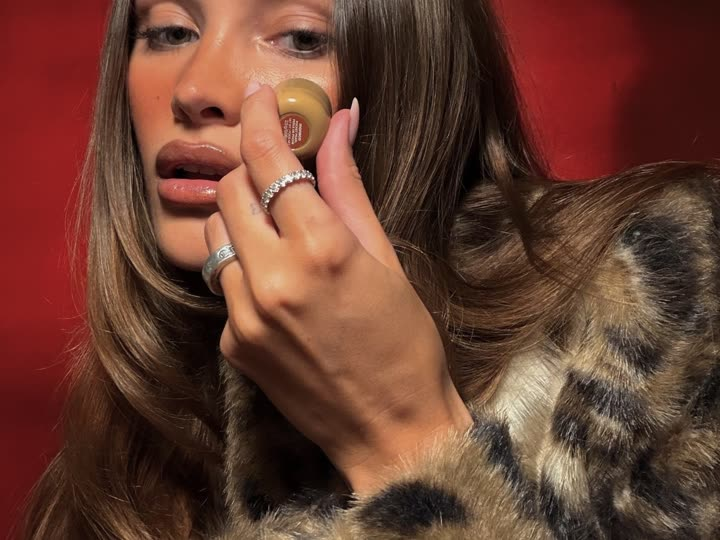
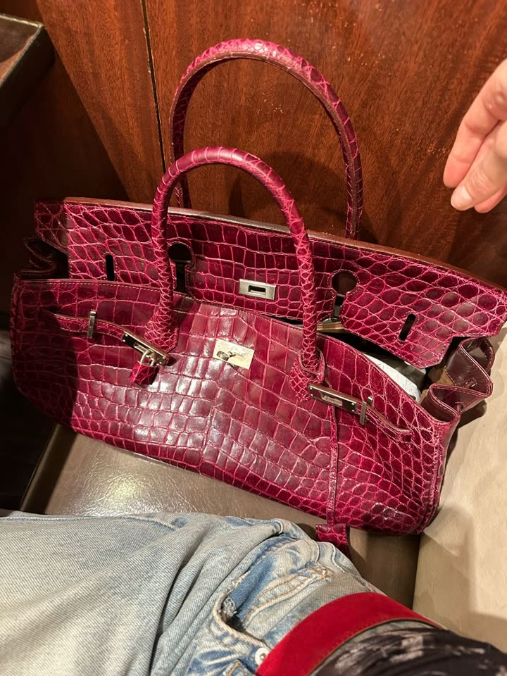
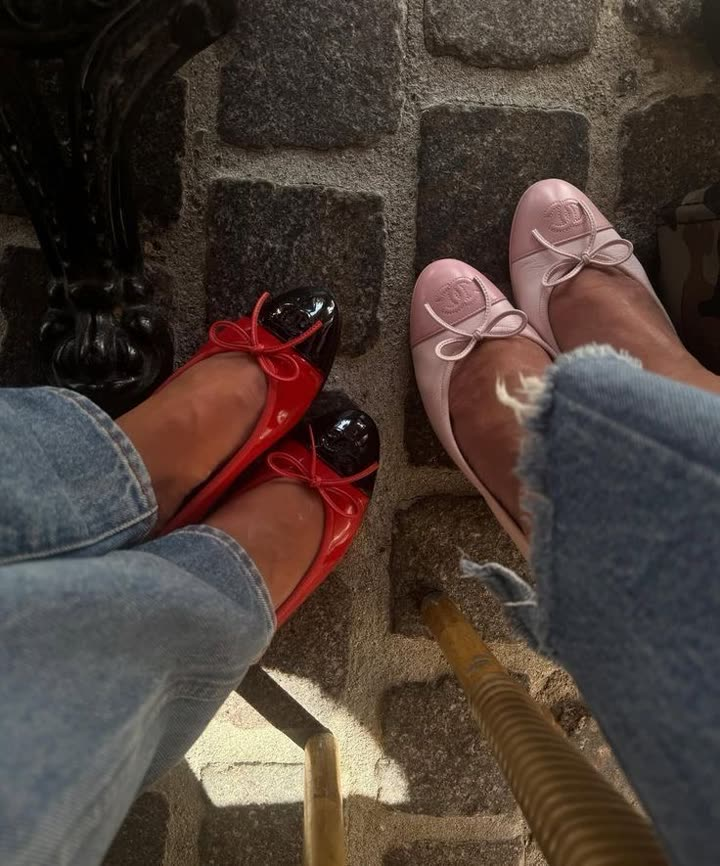
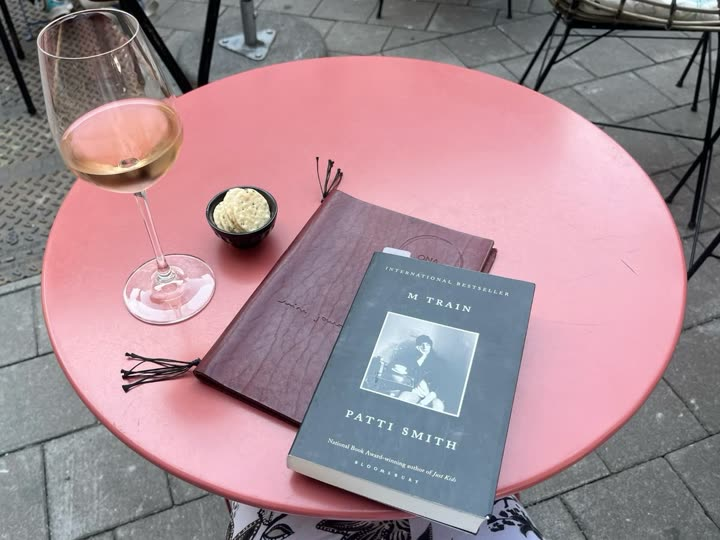
просмотр у шести моих рилсов

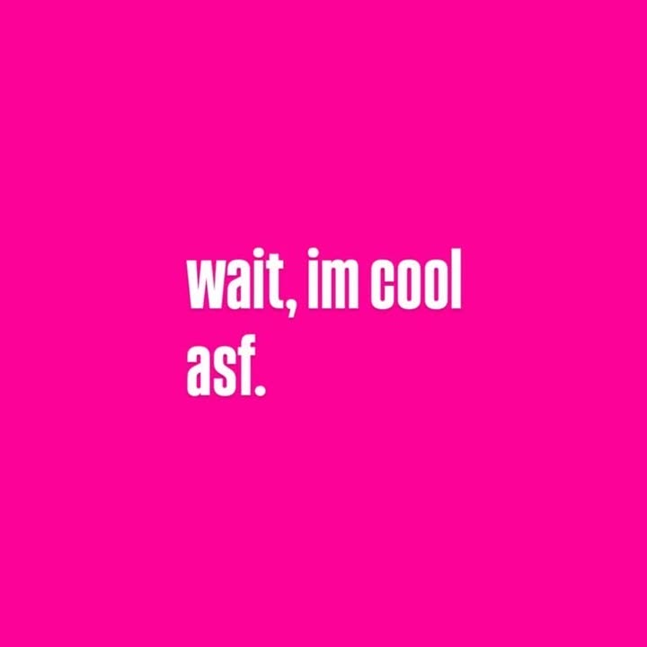
шесть моих рилсов набрали больше миллиона просмотров, а за несколько месяцев ко мне пришло 12 000 аудитории.
и в первую очередь потому, что я делала контент, основанный на трендах.
когда вы попадаете в тренд, вы попадаете в то, что происходит с вашей аудиторией прямо сейчас. это работает и для коммерческих брендов, и для личных.
Надежда Моргун
как это работает на моих рилсах
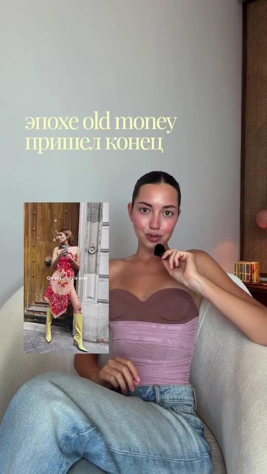
эпохе old money пришёл конец
- что произошло
- Marc Jacobs и Fendi уходят в яркое, вместо однотонной классики — пайетки
- как я это назвала
- эпоха дофаминовой ебанцы
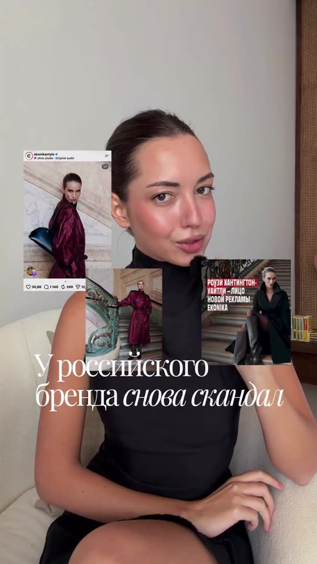
Эконика и социальный контекст
- что произошло
- съёмка с Роузи — и волна возмущения в комментариях
- как я это назвала
- социальный контекст: «как на похоронах включить Джастина Бибера»
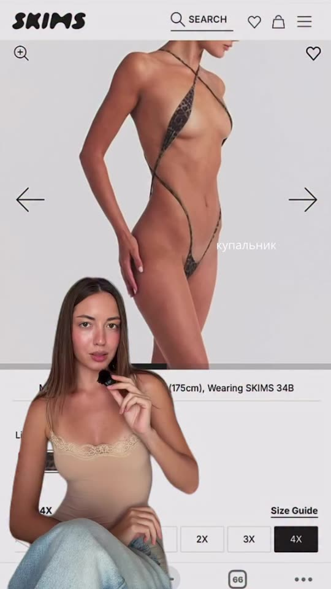
Skims: купальник «подходит всем»
- что произошло
- Fits Everybody — и «гора хейта»
- как я это назвала
- провокационный маркетинг: бесплатно даёт огромный охват
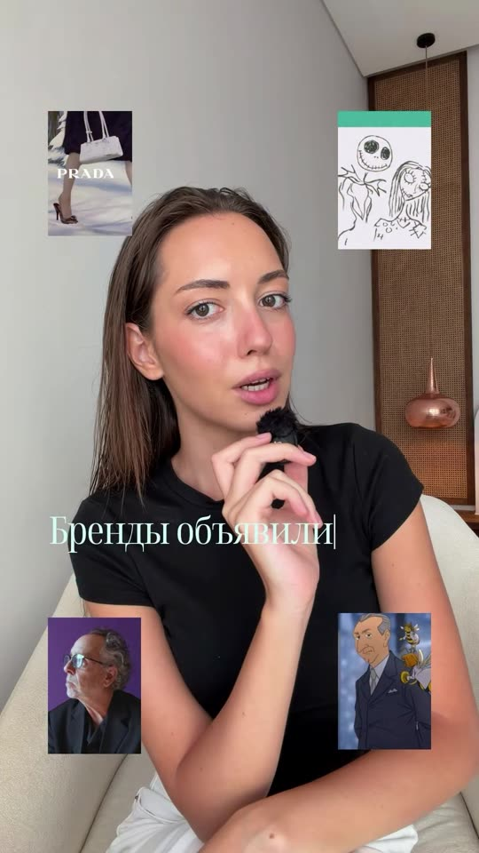
бренды объявили войну ИИ
- что произошло
- Prada, Porsche и Loewe делают рекламу руками
- что это говорит о людях
- «везде ИИ, а люди этому не доверяют»
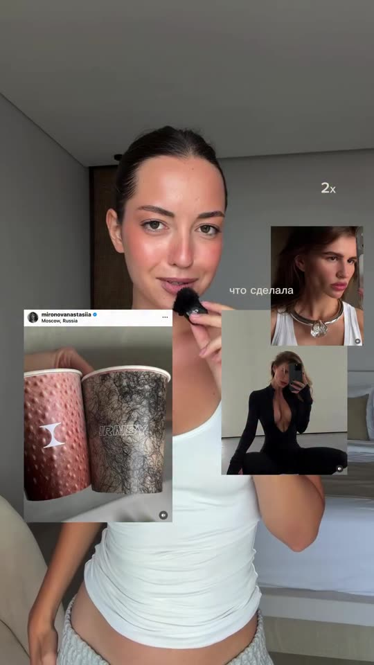
стаканчики Насти Мироновой
- что произошло
- новые стаканчики — и её снова отменяют
- как я это назвала
- провокационный маркетинг: контент создаёт не она, а за неё
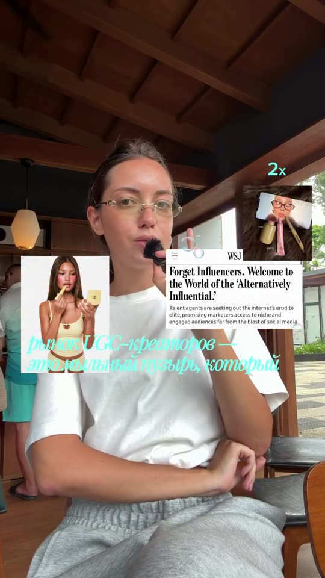
UGC-креаторы — мыльный пузырь
- что произошло
- UGC-креатор стал отдельной профессией
- моя реакция
- бизнесу — амбассадоры, креаторам — свой личностный блог
один рилс — по шагам
как из тренда получился мой самый просматриваемый рилс. по этим же шагам я делаю каждый рилс на тренде.
1 286 комментариев
заметить тренд
Marc Jacobs перезапускает косметику в ярких упаковках, Fendi возвращает Baguette из 2000-х — ни одной однотонной классической сумки
понять, что происходит с людьми
те, кто раньше хотел aesthetic вайба, всё чаще выбирают розовые юбки с пайетками, футболки со смешными принтами
назвать это
эпохе old money пришёл конец
, а мы входим в эпоху дофаминовой ебанцы
связать со своей темой
для меня это маркетинг: новый тренд, который позволит забрать всё внимание аудитории на себя
— для бизнеса и личных брендов
дать свою реакцию
и применить самой: монтаж у меня тоже в стиле дофаминовой ебанцы, если что
14 ноября я дам формулу, по которой вы сможете раскрывать тренды, инфоповоды и глобальные тенденции в своих рилсах.
почему у одних заходит тема денег, а у других — здоровья
тренды бывают двух видов. оба помогают попасть в то, что происходит с аудиторией, — и вашему бизнесу, и вашему личному бренду.
инфоповод
новость недели: звезда или большой бренд, неожиданный ход, цифра
глобальная тенденция
то, что меняется в людях. на ней растут целые темы
вот пять тенденций, на которых растёт контент прямо сейчас.
| тенденция | что с людьми | на этом растут темы | цифра |
|---|---|---|---|
| деньги расслоились | считают каждую покупку, уходят из «середины» в дешёвое или в премиум | деньги, финансы, оправданная цена, resale | 3 из 4 внимательнее проверяют, стоит ли покупка своих денег — Innova, 15.10.2026 |
| wellness | заботятся о себе, хотят долго жить и хорошо выглядеть | здоровье, питание, спорт, уход | траты на wellness в мире в 2027 — больше $2,8 трлн — Euromonitor 2027 |
| усталость и стресс | хотят радости, яркости, облегчения | little treats, яркое, дофаминовая ебанца | 70% говорят, что маленькие радости важны — Innova, 15.10.2026 |
| недоверие к ИИ и рекламе | ценят живое, ручное, настоящих людей | личный бренд, ручная работа, люди за брендом | только 25% помнят рекламу бренда у блогера — Kantar, 15.10.2026 |
| одиночество | ищут своих | community, клубы, brand community | 70% хотят принадлежать к чему-то большему — WGSN |
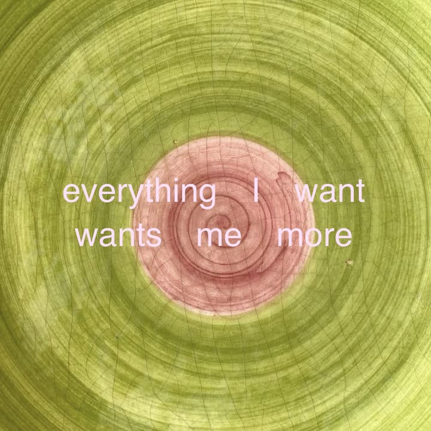
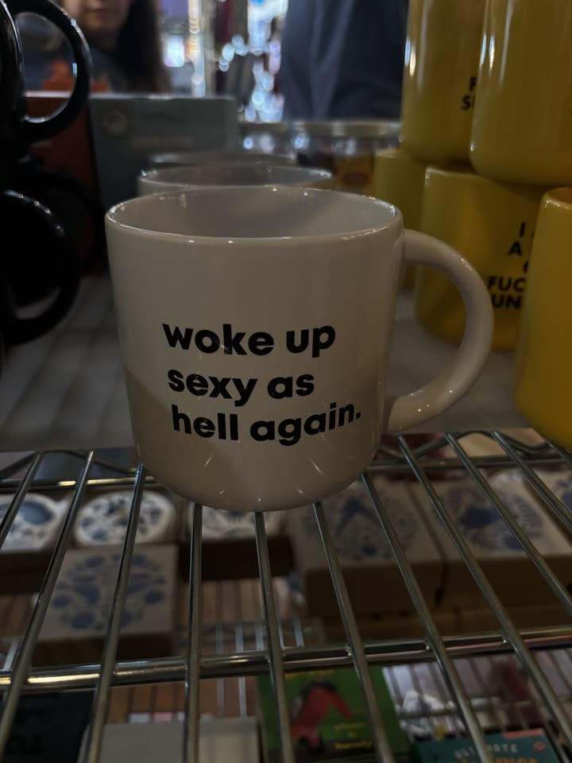
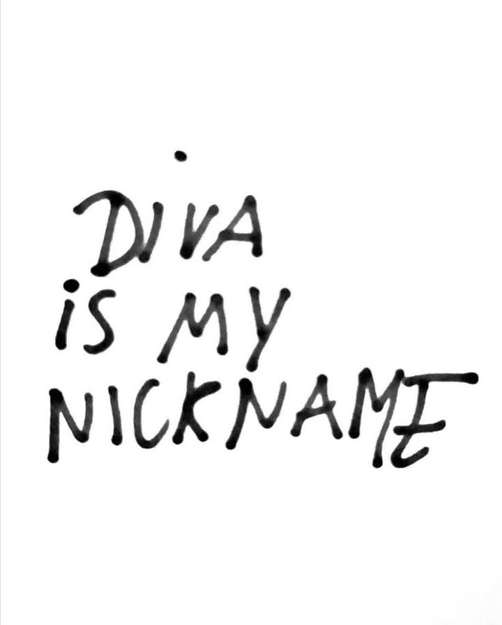
как применить тренды к своему личному бренду
об этом — на большой лекции «Тренды в маркетинге 2027» 14 ноября в 12:00 по Москве. и там же дам формулу, по которой вы сможете раскрывать тренды, инфоповоды и глобальные тенденции в своих рилсах.
присоединиться можно по ссылке https://t.me/morgundze_marketing_bot